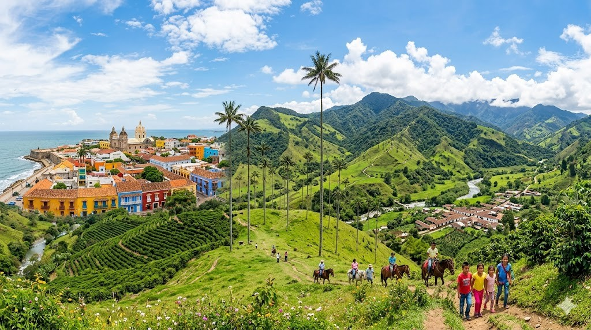
Hier stehen die wichtigsten Daten zu deinem Land. In der App baust du daraus deinen eigenen Steckbrief.
| Hauptstadt | Bogotá |
| Kontinent | Südamerika |
| Sprache | Spanisch |
| Währung | Kolumbianischer Peso |
| Einwohner | rund 52 Millionen Menschen |
| Fläche | etwa 1.141.000 km², mehr als dreimal so groß wie Deutschland |
| Nachbarländer | Venezuela, Brasilien, Ecuador, Peru und Panama |
In Kolumbien gibt es viele besondere Orte. Diese vier solltest du kennen.
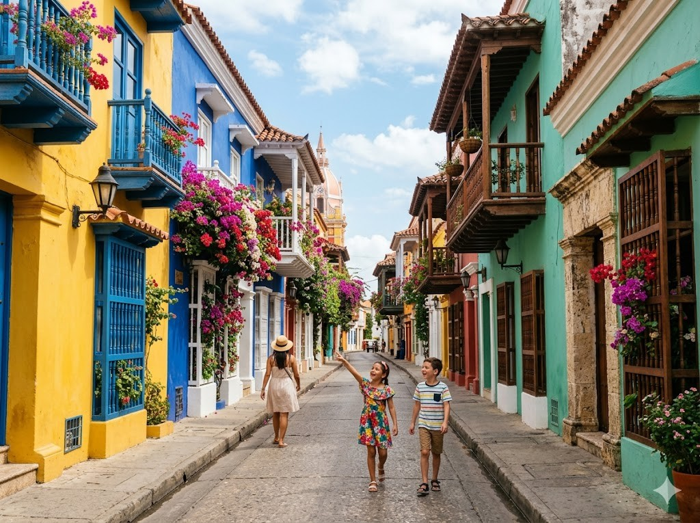
Altstadt CartagenaDie Altstadt von Cartagena liegt an der Karibikküste Kolumbiens. Die Häuser sind bunt gestrichen und haben Balkone voller Blumen. Eine dicke Stadtmauer schützt die alte Stadt. Cartagena gehört zum Weltkulturerbe der UNESCO und ist sehr beliebt bei Besuchern.
Grüne Wörter für die Appbunte Häuseram MeerStadtmauerKaribikWeltkulturerbe
Valle de CocoraDas Valle de Cocora ist ein hohes Tal in den Anden. Dort wachsen riesige Wachspalmen, die bis zu 60 Meter hoch werden können. Das ist der Nationalbaum Kolumbiens. Rund um das Tal gibt es Nebelwälder, in denen immer leichter Nebel hängt. Es sieht aus wie aus einem Märchenland.
Grüne Wörter für die Appriesige Wachspalmenbis 60 MeterNebelwälderNationalbaumhohes Tal
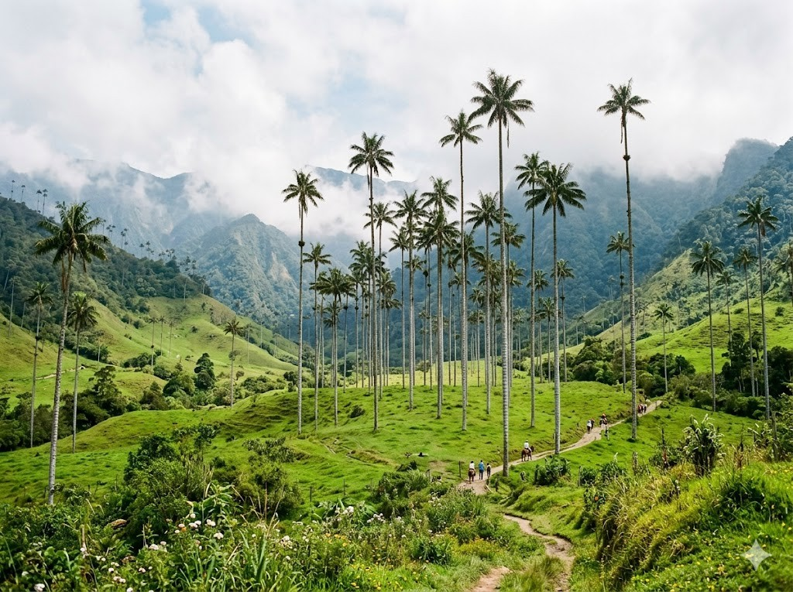
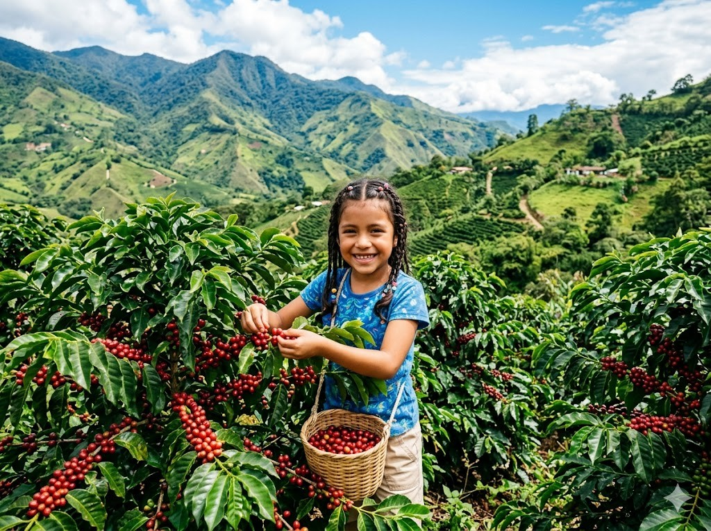
KaffeeregionKolumbien ist eine der wichtigsten Kaffee-Heimaten der Welt. In der Kaffeeregion wachsen Kaffeepflanzen auf grünen Hügeln in den Anden. Die Ernte passiert von Hand mit bunten Körben. Der kolumbianische Kaffee ist auf der ganzen Welt bekannt und wird in viele Länder verkauft.
Grüne Wörter für die AppKaffeeplantagenauf Hügelnbunter Ernte-KorbKaffee-Heimatgrüne Hügel
Goldmuseum BogotáDas Goldmuseum in Bogotá ist eines der bekanntesten Museen der Welt. Dort sind Tausende von Goldfiguren der Muisca ausgestellt, einem alten Volk aus Kolumbien. Die Goldschätze sind sehr kunstvoll gearbeitet. Das Licht im Museum lässt das Gold wunderschön glänzen.
Grüne Wörter für die Appin BogotáGoldfigurenMuiscaGoldschätzeberühmtes Museum
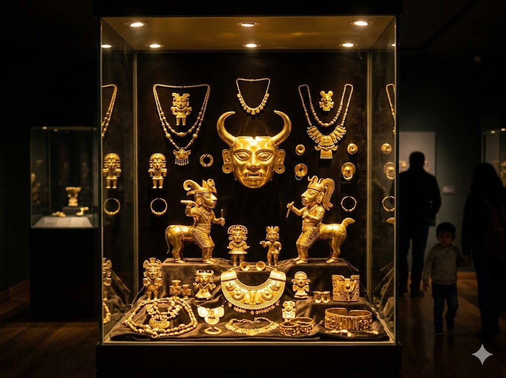
Diese Tiere leben in Kolumbien und sind ganz besonders.
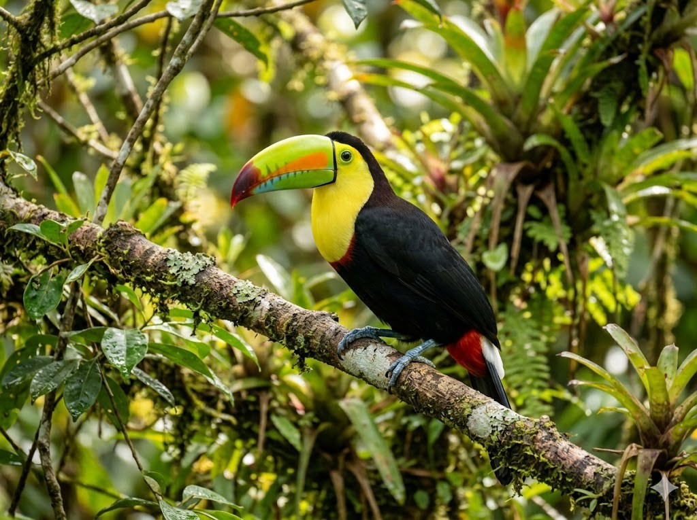
TukanDer Tukan ist ein Vogel mit einem riesigen bunten Schnabel. Trotz der Größe ist der Schnabel sehr leicht. Der Tukan lebt im tropischen Regenwald und frisst Früchte. Er klettert geschickt zwischen den Ästen und lockt mit lauten Rufen. Seine leuchtenden Farben machen ihn zu einem der schönsten Vögel des Waldes.
Grüne Wörter für die Appbunter Schnabelleuchtende FarbenRegenwaldfrisst Früchteklettert
BrillenbärDer Brillenbär ist der einzige Bär Südamerikas. Er lebt in den Anden und hat schwarzes Fell mit hellen Flecken um die Augen, die wie eine Brille aussehen. Daher hat er seinen Namen. Er frisst vor allem Pflanzen und Früchte. Der Brillenbär gilt als Wappentier und steht unter Naturschutz.
Grüne Wörter für die Appeinziger Bärin den Andenschwarzes Fellhelle FleckenSüdamerika
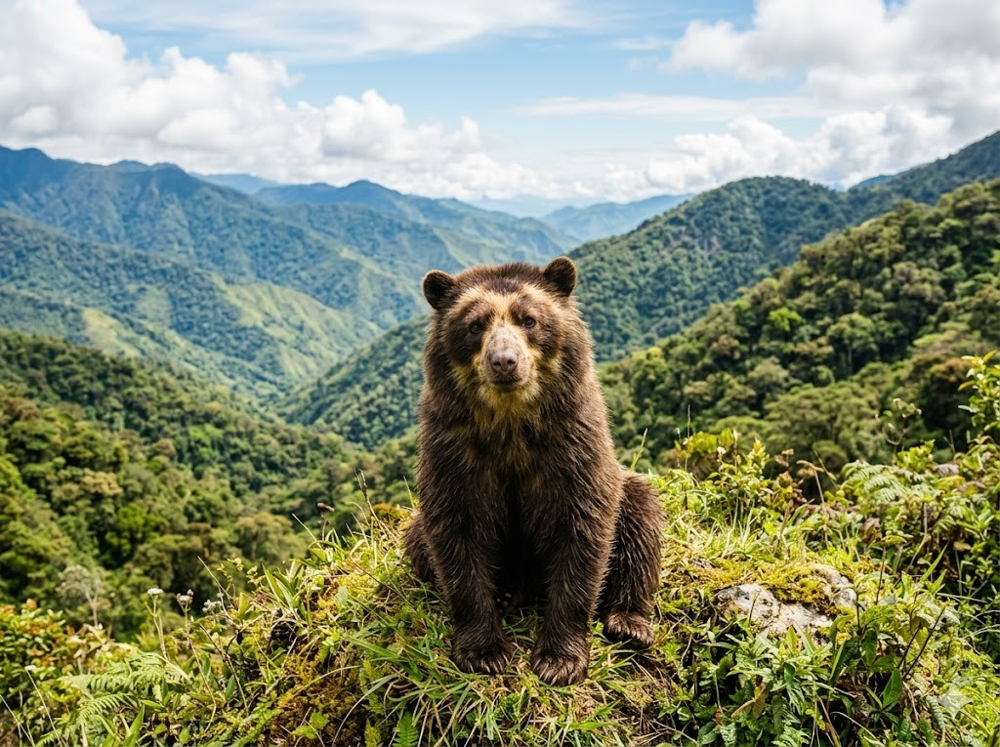
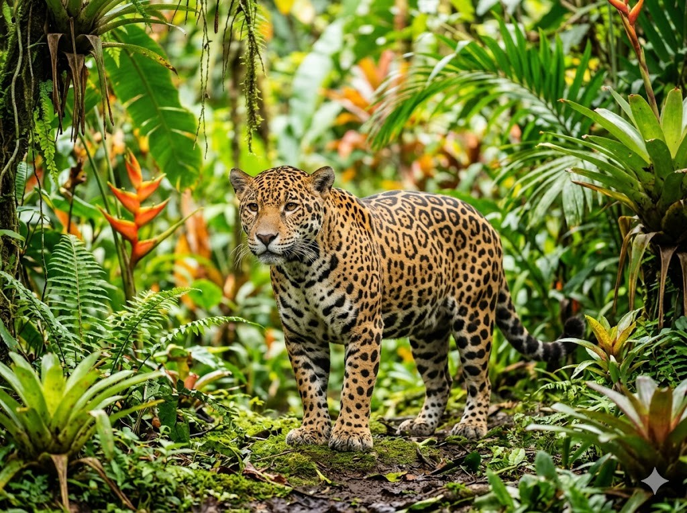
JaguarDer Jaguar ist die größte Raubkatze Südamerikas. Er hat ein geflecktes Fell und ist sehr kräftig. Im Regenwald Kolumbiens lebt er als Einzelgänger und jagt nachts. Der Jaguar ist ein guter Schwimmer und hat keine Angst vor Wasser. Leider ist er durch Abholzung seines Lebensraums bedroht.
Grüne Wörter für die Appgrößte Raubkatzegeflecktes FellRegenwaldsehr kräftigguter Schwimmer
In der App kannst du beim Essen das Foto nehmen oder dein Gericht selbst malen.
ArepaDie Arepa ist ein dicker Maisflade, der gebraten oder gegrillt wird. Sie ist knusprig außen und weich innen. Viele Menschen in Kolumbien essen sie zum Frühstück, oft mit Käse oder Eiern darauf. Arepas gibt es in vielen verschiedenen Formen und Füllungen. In fast jeder Familie werden sie selbst gemacht.
Grüne Wörter für die Appdicke Maisfladengebraten oder gegrilltzum Frühstückmit Käseknusprig
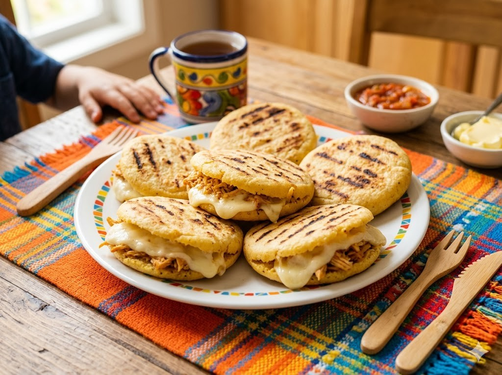
Bandeja PaisaDie Bandeja Paisa ist ein riesiger Teller voller verschiedener Speisen. Darauf liegen Bohnen und Reis, Fleisch, Chicharrón (knuspriger Schweinebauch), ein Spiegelei und eine Scheibe Kochbanane. Dieses Gericht kommt aus der Kaffeeregion und macht sehr satt. Es ist das bekannteste traditionelle Gericht Kolumbiens.
Grüne Wörter für die Appgroßer TellerBohnen und ReisFleischviele Beilagensehr sättigend
SancochoSancocho ist eine kräftige Hühnersuppe, die in Kolumbien sehr beliebt ist. Darin schwimmen Kartoffeln, Stücke von Kochbanane, Mais und frischer Koriander. Die Suppe riecht herrlich und wärmt den Bauch. In vielen Familien wird sie sonntags zusammen gegessen.
Grüne Wörter für die Appkräftige HühnersuppeKartoffelnKochbananeMais und KorianderFamilienessen
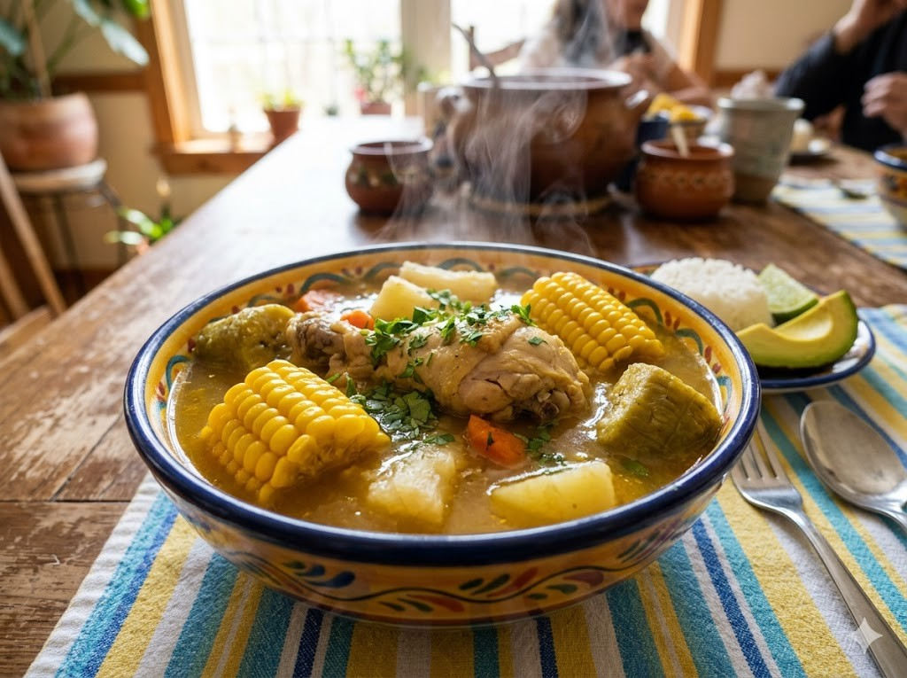
⚽ Gut zu wissen
Die Fußball-Nationalmannschaft von Kolumbien trägt den Spitznamen „Los Cafeteros", das bedeutet die Kaffee-Leute. Sie spielt in gelben Trikots und ist bei der WM 2026 dabei. Kolumbien hat viele bekannte Fußballspieler hervorgebracht. Zwei der bekanntesten sind James Rodríguez und Luis Díaz, die auch in großen europäischen Vereinen spielen.
Grüne Wörter für die AppLos Cafeterosgelbe Trikotsbei der WM 2026James RodríguezLuis Díaz
🌟 Profi-Wissen
James Rodríguez war bei der WM 2014 der beste Torschütze des Turniers. Er spielte so gut, dass er den Goldenen Schuh gewann. Kolumbien erreichte das Viertelfinale. Heute gilt er als Nationalheld in Kolumbien.
Grüne Wörter für die AppJames RodríguezWM 2014 TorschützenkönigGoldener SchuhViertelfinaleNationalheld
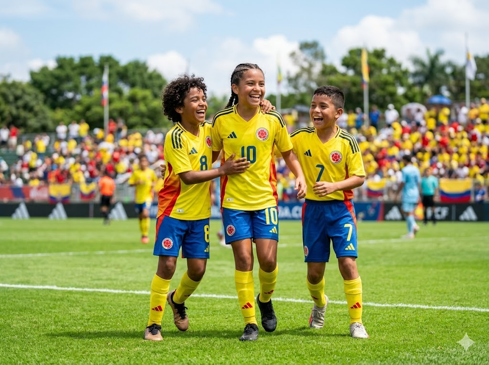
Schule in KolumbienIn Kolumbien lernen die Kinder auf Spanisch. Viele tragen bunte Schulkleidung mit dem Symbol ihrer Schule. Das Wetter ist oft tropisch warm, deshalb gibt es auf vielen Schulgeländen große Pausenhöfe mit Bäumen. Nach der Schule gibt es Hausaufgaben. Englisch wird in vielen Schulen als zweite Sprache gelernt.
Grüne Wörter für die Appauf Spanischbunte Schulkleidungtropisch warmgroße PausenhöfeHausaufgaben
Vallenato und FesteKolumbien ist bekannt für seine bunten Feste und Umzüge. Besonders beliebt ist der Vallenato, eine Musikrichtung mit Akkordeon, Trommel und Rasseln. Bei Festen tanzen die Menschen zusammen und tragen farbenfroh bunte Kleidung. Manche Frauen tragen dabei einen bunten Blumenkorb auf dem Kopf.
Grüne Wörter für die Appbunte FesteAkkordeon-MusikVallenatogemeinsam tanzenBlumenkorb
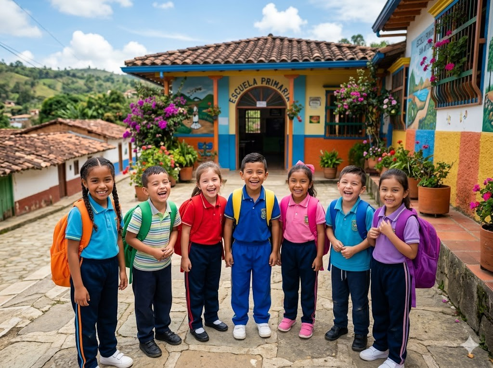